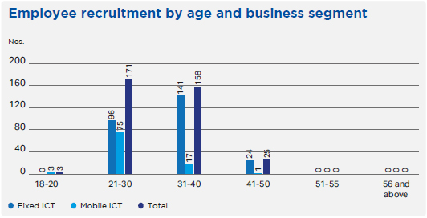
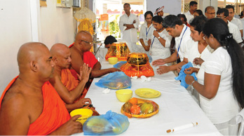
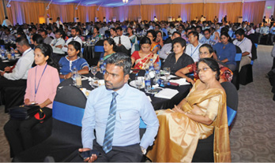

Management Discussion and Analysis
Employee Capital


SLT’s employee capital is considered among the most valuable assets of the Company. SLT recognises that satisfied employees are productive employees; to this effect, SLT provides a rewarding working environment for its employees and continues to improve the employee experience in an open and transparent manner.
Workforce profile
Total workforce by employment type
| Type of employment | 2019 | 2018 | ||
| Fixed ICT operations |
Mobile ICT operations |
Fixed ICT operations |
Mobile ICT operations |
|
| Permanent | 5,217 | 1,165 | 5,364 | 1,165 |
| Contract | 18 | 122 | 8 | 113 |
| Outsourced | 1,667 | 162 | 1,869 | 156 |
| Total | 6,902 | 1,449 | 7,241 | 1,434 |
* Excludes part-time staff
Total workforce by gender
| Type of employment | 2019 | 2018 | ||
| Female | Male | Female | Male | |
| Fixed ICT operations | 1,415 | 3,820 | 1,432 | 3,940 |
| Mobile ICT operations | 379 | 908 | 386 | 892 |
| Overall ICT business | 1,794 | 4,728 | 1,818 | 4,832 |
*Excludes Outsourced and part-time staff

Recruitment
SLT constantly seeks to recruit new talent by seeking out specialists, leaders, and future executives. Efforts around talent acquisition focuses on long-term human resources planning and finding candidates for positions that require skills that are specific to the Company and industry are vital for ensuring the continued growth of the business. All recruitments are based on SLT’s Staff Recruitment and Promotion Scheme (SRPS).
Employee recruitment by age and business segment
| Age Category |
Fixed ICT |
Mobile ICT |
Total ICT |
| 18-20 years | 0 | 3 | 3 |
| 21-30 years | 96 | 75 | 171 |
| 31-40 years | 141 | 17 | 158 |
| 41-50 years | 24 | 1 | 25 |
| 51-55 years | 0 | 0 | 0 |
| 56 years and above | 0 | 0 | 0 |
| Total | 261 | 96 | 357 |
Note: Excludes both outsourced and part-time staff
Employee recruitment by grade and business segment
| Grade | Fixed ICT Operations (2019) |
Mobile ICT Operations (2019) |
Fixed ICT Operations (2018) |
Mobile ICT Operations (2018) |
| Senior management | 1 | 0 | 1 | 0 |
| Middle management | 0 | 10 | 0 | 8 |
| Executives | 41 | 86 | 5 | 114 |
| Non-executive staff | 219 | 0 | 469 | 0 |
| Total | 261 | 96 | 475 | 122 |
Note: Excludes both outsourced and part-time staff
Turnover
Turnover at SLT may occur through the following scenarios:
- Employees may conclude their employment at SLT subject to giving prior notice as per their letters of appointment.
- SLT may choose to terminate an employee’s employment subject to the provisions of the respective labour agreements.
- Retirement at the age of 55 years, with extensions up to 60 years of age upon request subject to performance, discipline and conduct, recommendations of executive supervisors, and the discretion of the management.
Employee turnover by age and business segment
| Age Category |
Fixed ICT (%) |
Mobile ICT (%) |
| 18-20 years | 0 | 0 |
| 21-30 years | 12.6 | 2.97 |
| 31-40 years | 2.0 | 2.97 |
| 41-50 years | 1.5 | 0.39 |
| 51-55 years | 3.1 | 0.08 |
| 56 years and above | 27.9 | 0.55 |
| Total | 7.6 | 6.95 |
*Note: Excludes both outsourced and part-time staff
Employee turnover by gender and business segment
|
Fixed ICT (%) |
Mobile ICT (%) |
|
| Female | 5.5 | 2.73 |
| Male | 8.4 | 4.22 |
| Total | 7.6 | 6.95 |
*Note: Excludes both outsourced and part-time staff
Employee turnover by grade and business segment
| Grade | 2019 | 2018 | ||
| Fixed ICT operations (%) |
Mobile ICT operations (%) |
Fixed ICT operations (%) |
Mobile ICT operations (%) |
|
| Senior management | 11.8 | 0.16 | 8.2 | 4.44 |
| Middle management | 6 | 2.03 | 5.3 | 5.86 |
| Executives | 11.6 | 4.77 | 10.9 | 5.94 |
| Non-executive staff | 6.9 | – | 10.7 | – |
| Total | 7.6 | 6.95 | 10.6 | 5.82 |
*Note: Excludes both outsourced and part-time staff
Occupational health and safety
SLT has established a safe and healthy working environment and works to maintain safety standards in the workplace. Awareness programmes for better health practices are carried out periodically and the Suwatha health screening programme is conducted annually for all employees above age 30 across the island. Furthermore, the SLT medical assistance programme and Agrahara health insurance programme cover all staff.
Employee relations and engagement
Engaging with employees and having clear lines of communication with them are essential to improve and enhance their involvement and enthusiasm about their workplace. SLT has worked to improve the employee experience, such as changing old policies to keep up with the rapidly changing digital economy by introducing a “work from nearest office” pilot project and automating the performance management process at SLT through the Enterprise Resource Planning (ERP) system.
Benefits and promotions
Employees of SLT enjoy a broad range of benefits and welfare initiatives, including:
- Attractive EPF/ETF contributions
- Attractive bonuses paid each year
- Leave bonus for unutilised leave
- Medical centre, and Agrahara Health Insurance Scheme
- Financial support for higher education, including MSc, MBA, and other postgraduate studies
- Training programmes
- Workmens’ compensation for disabilities/accidents during work
- Allowances for risk, overnight, subsistence, transport, meals, foreign training, etc.
- Monthly and annual sales programmes
- Gratuity
- Death donations to family members
- Vehicle scheme
- Holiday bungalows
- Cafeteria facilities
- Loan facilities and reimbursement of housing loan interest
- Leave entitlements, overseas leave, and leave for Government elections
- Telephone subscriptions and mobile phone purchase reimbursement
- Fitness programmes including Zumba, yoga, karate, swimming, cycling, etc.
- Sports activities and associations for cricket, football, netball, athletics, volleyball, table tennis, badminton, etc.
- Religious activities such as Buddhist programmes, Christmas activities, etc.

SLT believes that satisfied employees who are looked after well contribute to an engaging work environment for everyone, which in turn reflects positively on the Group. SLT works to improve the work-life balance of its employees through initiatives like the Telecom Games, Provincial meets, and Regional awareness programmes aimed at improving relationships among regional staff.
Opportunities for promotions are available to employees based on their professional qualifications, performance, and experience. Employees are eligible for promotions if they qualify for the criteria defined in the SLT Staff Recruitment and Promotion Scheme. Candidates are selected for promotions through written examinations and/or interviews.
SLT Human Capital Solutions
Superhuman Award Ceremony 2019
HCS sought to recognise employees for their exceptional performance with the “Superhuman Award Ceremony 2019” held at the Sri Lanka Foundation Institute in March 2019. The event was held to recognise HCS employees based on their performance appraisals, with employees awarded under categories such as Innovative/New Inventions, Educational/Professional Achievements, and Sports. Employees were also recognised for their loyalty, dedication, and hard work on behalf of the organisation.
| Category |
Number of awards |
| Performance (Technical) | 106 |
| Customer Care | 30 |
| Contact Centre | 23 |
| Sales | 20 |
|
Innovative/ New inventions |
3 |
|
Educational/Professional achievements |
20 |
| Sports | 27 |
| Total | 229 |
Training and other activities
SLT considers the development of employees to be essential to the growth of SLT, in addition to being beneficial to employee retention and loyalty. Employee training and development is conducted at an individual and departmental level. Employees are provided with a combination of formal training, on-the-job experience, and regular feedback from their managers through an appraisal system that helps them and SLT identify what areas require more focus. SLT employees completed a total of 109,066 hours of training during January – December 2019.

Mobitel
Executive Development Programme
Mobitel conducts the Executive Development Programme for the executive cadre with the objective of developing and grooming executives with potential by empowering them with essential leadership skills. The programme has been developed in line with the Mobitel Competency Framework. Key highlights of the programme include the self-learning phase, placement test for selection, 180-degree reviews of participants, residential workshops, and a grooming and etiquette session. Participants are required to complete an ROI-based project that results in tangible benefits to the organisation. The programme was initiated in 2017 and nearly 70 participants have completed it. Upon successful completion of the programme, participants get to attend a graduation ceremony at the Annual Learning and Development Awards.
Management Development Programme
The Mobitel Management Development Programme is a key component of the Leadership Development Framework at Mobitel. Launched in 2018 and developed in line with the Mobitel Competency Framework, the objective of the tailor-made programme is to enhance the managerial capacity of managers and aspiring managers to drive a future focused strategy for the organisation. Key highlights of the programme include the assessment centres, workshops, grooming and etiquette sessions, persuasive presentation skills, and executive coaching. The programme includes a project phase to bring in tangible business results to the organisation.
Learning and Development Awards
Mobitel held its annual Learning and Development Awards which connects the learning fraternity at Mobitel. The event recognises staff who have successfully completed the key cross functional leadership development programmes and felicitates internal staff members who share their knowledge with staff via internal trainings and knowledge sharing sessions.
Great Place to Work initiative
Mobitel joined hands with the Great Place to Work Institute to roll out the Great Place to Work initiative at the organisation. The initiative aims to create a conducive work environment strengthened with trust which motivates staff members to go the extra mile and contribute to achieving organisational goals.
Collaborative learning initiatives
Along the journey of establishing a learning culture within the organisation, Mobitel formed its own internal trainer faculty which plays a key role in conducting internal trainings on timely topics for Mobitel staff. Staff members also benefit from quarterly knowledge sharing sessions, thus strengthening the organisation’s knowledge sharing culture. Mobitel also has an active Toastmasters Club whose members have made significant achievements at the area and district levels. Plans are in place to extend the Club to regional staff to develop their public speaking and leadership skills.
SLT VisionCom
SLT VisionCom (SLTVC) conducted several activities, events, and programmes during 2019 to develop its human resources. Activities ranged from providing local and international training opportunities for employees to recognising the exemplary performance of SLTVC employees at the SLT VisionCom Awards Night 2019. Employees who completed 5 and 10-year tenures with SLTVC were also recognised for their commendable service and contribution to the growth of SLTVC.
SLT Human Capital Solutions
The HCS Annual Leadership Training Programme was conducted for the Welfare Committee members, to improve their leadership, motivational, and teamwork skills, who were then appointed to represent HCS employees and ensure the fair distribution of welfare benefits to employees across the country.
SLT Digital Info Services
SLT Digital Info Services (SLTDS) has focused on the retention of its human resources and new acquisition initiatives to ensure that it has a competent and skilled workforce ready and available as and when required. SLTDS holds an Annual Achievers’ Award Ceremony to recognise the contributions of its employees. Utilising a unique evaluation framework to identify outstanding performance, employees are awarded in several categories, including Sales, Operations, IT, Finance, HR and Administration, as well as longstanding employees who have worked with SLTDS for many years.
The Management team of SLTDS also took forward its learning culture and knowledge sharing initiatives by participating in the AsiaComm 2019 International Annual Conference on Asian Local Search and Media Association, the leading conference for companies providing digital advertising, market, and commerce tools to small businesses across Asia.
Unions and grievance handling
SLT has maintained social dialogue with trade unions since its privatisation. An open-door policy with trade unions; any trade union can meet with the Chief Human Resources Officer (CHRO) at any time and positive solutions are approached together for all issues. At least one formal discussion is conducted with all trade unions every three months. 23 active trade unions are recognised by the Company and almost all employees belong to at least one trade union.
Furthermore, a Grievance Handling Committee has been established along with a systematic and comprehensive mechanism to handle any staff grievances and issues. A detailed whistle-blowing policy is in place to allow any employee to safely and anonymously report any acts of misconduct that they have been subject to or witnessed.